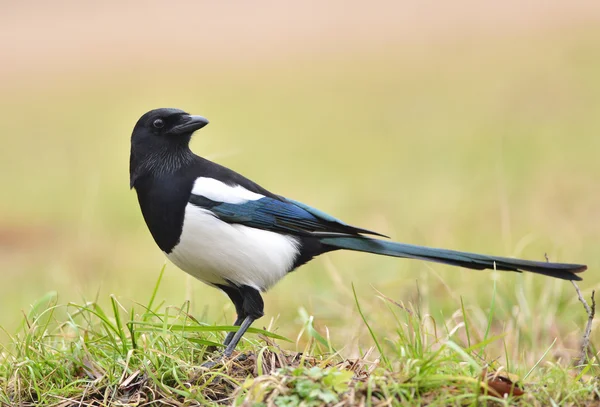
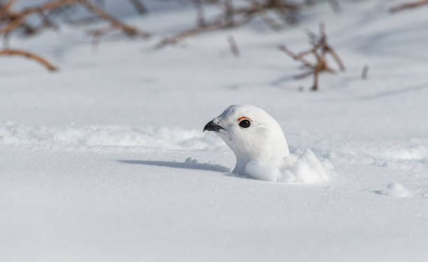
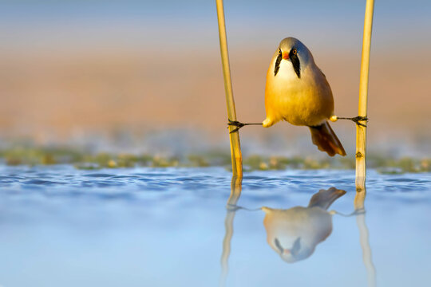

Lintujen seuraamisessa yhdistyy luonnossa liikkuminen, aivojen aktivoiminen ja mielen rauhoittuminen. Se tutkitusti vähentää stressiä ja alentaa verenpainetta. Lisäksi, linnut ovat mahtavia, aina niitä kelpaa katsella.
Bongailla voi myös ilman välineitä, mutta todellinen lintubongari investoi ainakin kiikareihin ja lintukirjaan. On olemassa myös sovelluksia, joihin havainnot voi kirjata ja jotka voivat jopa tunnistaa ääniä.
Kevät on ehdottomasti paras aika lintujen seuraamiseen. Muuttoliike on vilkkaimmillaan ja soidinmenot alkavat. Pesiviä lintuja ei saa kuitenkaan häiritä! Kellonaika riippuu täysin siitä, haluatko bongata yön, aamun vai päivän lajeja.
Suomen linnusto on rikas ja monipuolinen, ja bongattavaa löytyy lähes kaikkialta. Etelä-Suomen parhaisiin bongailupaikkoihin lukeutuvat mm. Suomenoja, Vanhankaupunginlahti ja Porkkalanniemi.
Lintujen aktiivisuus ja liikkuminen vaihtelee suuresti vuodenaikojen mukaan. Näin bongailet koko vuoden läpi:
Paluumuutto: Monet linnut palaavat talvehtimispaikoistaan. Taivaat täynnä suuria lintuauroja.
Soidinmenot: Lintujen konsertto aktiivisimmillaan. Paras aika vuodesta sekä nähdä, että kuulla lintuja.
💡 Vinkki: Maaliskuu on parasta aikaa tehdä pöllöretkiä.
Pesiminen: Linnut kasvattavat ja ruokkivat poikasiaan ahkerasti. Linnut kaivelevat, nappaavat ja kalastavat saalista.
Metsän linnut: Etenkin Karjalan ja Lapin metsät täynnä aktiivista lintuelämää.
💡 Vinkki: Jos haluat bongailla Lapissa, tee se kesällä. Ei vielä itikoita...
Poismuutto: Linnut aloittavat muuttomatkansa etelään talvehtimista varten. Taivaat jälleen täynnä suuria lintuauroja, vain toiseen suuntaan.
Rannikoiden linnut: Rannikkoalueet ja kosteikot täyttyvät muuttavista vesilinnuista ja kahlaajista.
💡 Vinkki: Euroopan suurin lintutapahtuma EuroBirdWatch pidetään lokakuussa. Silloin kerätään tiedot lasketuista lintuyksilöistä kaikista Euroopan maista.
Sisukkaat talvehtijat: Suuresta muuttoliikkeestä huolimatta monet lajit jäävät talvehtimaan Suomeen. Suomen lintuaktiivisuus ei siis sammu talvellakaan.
Ruokkiminen: Auta talvehtijoita tarjoamalla niille ruokaa vaikkapa lintulaudalla. Oiva tilaisuus tarkkailla ja tunnistaa ruokailevia lintuja läheltäkin.
💡 Vinkki: Paras aika aloittaa harrastus ensimmäistä kertaa. Lintujen määrä on pienimmillään, joten aloitus ei ole ylikuormittavaa.

Opi muutamat perusteet lintuharrastajien sanastosta:
Ensimmäinen näkö- tai kuulohavainto uudesta lintulajista.
Havaintovihko tai -kirja.
Väärä lintuhavainto. "Käpyilijä" on henkilö, joka tekee vääriä havaintoja usein.
Suurharvinaisuus, joka sekoittaa harrastajan tajunnan totaalisesti.
